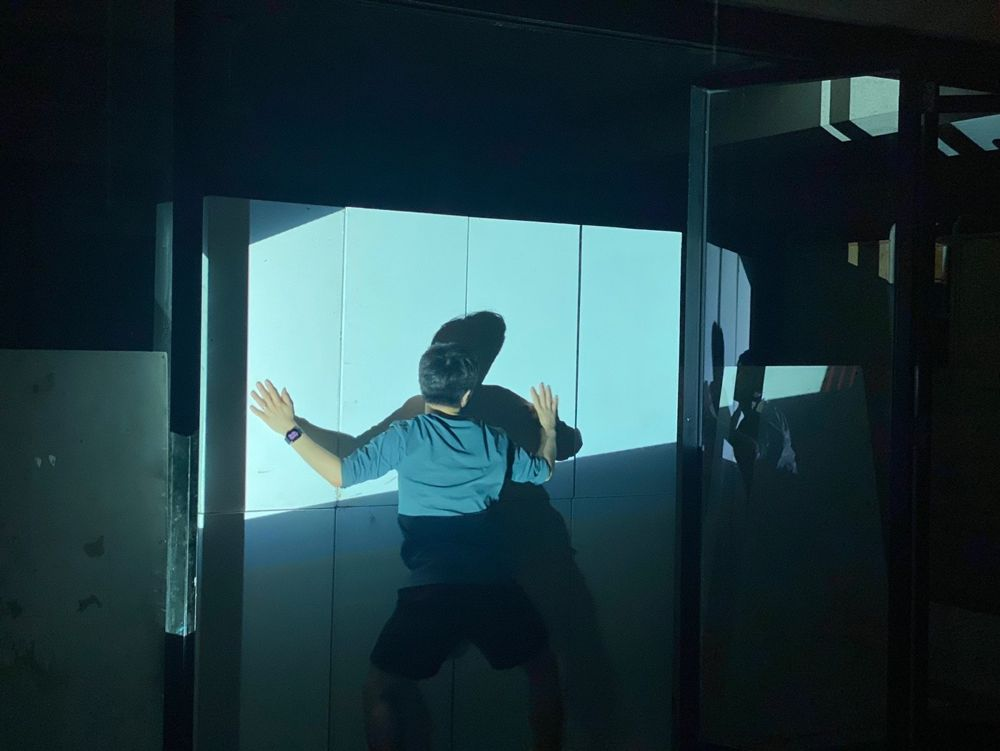

Green Pig > Archive > Fake News 2022: MAPHIKO

Starts from a hypothetical scenario in which Malaysia, the Philippines and Korea unite politically and economically to found a solidarity state, MA-PHI-KO. The three countries, which have all lived through colonial rule, dictatorship and censorship, hold an election for the new nation's leader, and as the candidates' stories gain logic and persuade someone, the piece explores the mechanics of fake news. Part of the Fake News Project.
2022.12.3 / Rimbun Dahan, Malaysia
2023.5.20–21 MA-PHI-KO / Gyeonggi Sangsang Campus - invited, Suwon Theater Festival
2023.10.21–22 MAPHIKO / in front of the former Jeonnam Provincial Office - invited, Gwangju Fringe Festival
Devised by Green Pig
Director: Park Hyunji, Sharifah Alesha Al-yahya, James Harvey Estrada
Previous: Ill-fated: A Twentieth Birthday Wish | Next: Extra Chronicles
Back to the archive | Any work
Published 2026.11.13